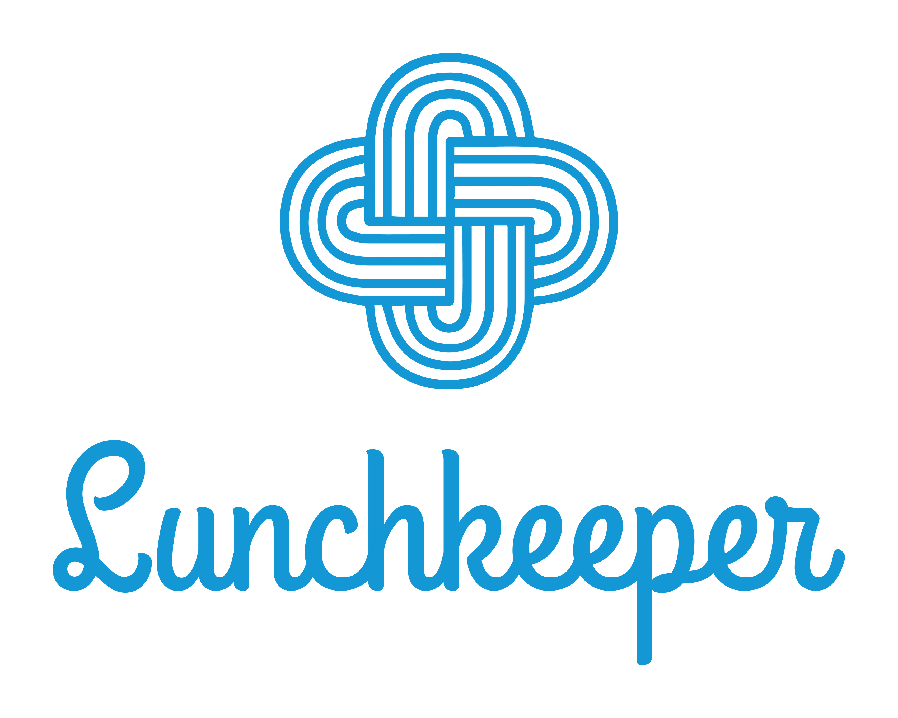

<ion-header>
  <ion-toolbar>
    <ion-buttons slot="start">
      <ion-menu-button></ion-menu-button>
    </ion-buttons>
    <ion-title>About</ion-title>
  </ion-toolbar>
</ion-header>

<ion-content padding>
  
  <ion-item><ion-label>Version</ion-label><ion-text>{{version}}</ion-text></ion-item>
  <ion-item><ion-label>Author</ion-label><ion-text>Josef Jura</ion-text></ion-item>
</ion-content>